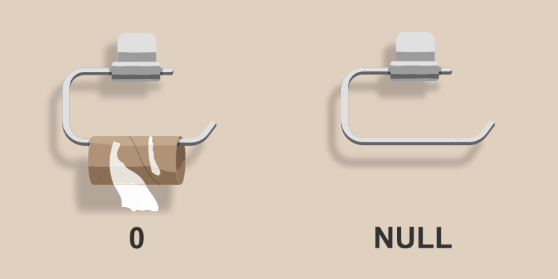

Licenca
To delo je na voljo pod pogoji slovenske licence Creative Commons 2.5:
priznanje avtorstva - nekomercialno - deljenje pod enakimi pogoji.
Celotna licenca je na voljo na spletu na naslovu http://creativecommons.org/licenses/by-nc-sa/2.5/si/. V skladu s to licenco je dovoljeno vsakemu uporabniku delo razmnoževati, distribuirati, javno priobčevati, dajati v najem in tudi predelovati, vendar samo v nekomercialne namene in ob pogoju, da navede avtorja oziroma avtorje in izdajatelja tega dela. Če uporabnik delo predela, kar pomeni, da ga spremeni, preoblikuje, prevede ali uporabi to delo v svojem delu, lahko predelavo dela ponudi na voljo le pod pogoji, ki so enaki pogojem iz te licence oziroma pod enako licenco.

Poizvedbe iz več zunanje združenih tabel
Glede na to, kako želimo analizirati podatke, se lahko zgodi, da notranje združevanje podatkov iz različnih tabel s pomočjo INNER JOIN morda ne bo zadostovalo, saj bo dobljena tabela vsebovala samo podatke, ki so prisotni v obeh tabelah.
Če tabeli vsebujeta asimetrične podatke, kar se zlahka zgodi pri vnosu podatkov v različnih fazah, moramo namesto notranjega združevanja uporabiti zunanje združevanje tabel s pomočjo LEFT JOIN, RIGHT JOIN ali FULL JOIN. S tem zagotovimo, da bodo rezultati poizvedbe vsebovali podatke, ki jih potrebujemo.
SELECT stolpec1, stolpec2, ... FROM tabela INNER/LEFT/RIGHT/FULL JOIN tabela2 ON tabela.id = tabela2.tabela_id WHERE pogoj(i) ORDER BY stolpec ASC/DESC LIMIT stev_rezultatov OFFSET stev_odmika;
Podobno kot pri tabelah združenih z INNER JOIN, moramo tudi pri zunanje združenih tabelah podatke združiti s pomočjo primarnih in tujih ključev.
Kadar združujemo podatke iz tabele A in tabele B, so pri poizvedbi z LEFT JOIN v rezultat poizvedbe vključene vse vrstice iz tabele A, ne glede na to, ali obstajajo ujemajoče vrstice v tabeli B. Poizvedba z RIGHT JOIN je podobna, vendar v obratni smeri saj vključuje vse vrstice iz tabele B, ne glede na to, ali obstajajo ujemajoče vrstice v tabeli A. Poizvedba s FULL JOIN pa v rezultat poizvedbe vključi vse vrstice iz obeh tabel, ne glede na to, ali obstajajo ujemajoče vrstice v drugi tabeli. Za lažje razumevanje si oglejmo še grafični pregled različnih vrst združevanja podatkov.
Zanimivost
Morda boš videl(-a) poizvedbe, ki vsebujejo LEFT OUTER JOIN, RIGHT OUTER JOIN ali FULL OUTER JOIN. Ključna beseda OUTER se uporablja oziroma ohranja samo zaradi združljivosti s standardom SQL-92. Zato so takšne poizvedbe enakovredne poizvedbam LEFT JOIN, RIGHT JOIN ali FULL JOIN.
Pri uporabi katerega koli zunanjega združevanja podatkov se bo najverjetneje zgodilo, da bodo v rezultatu poizvedbe določeni podatki manjkali (ker ne obstajajo v izborni tabeli). V tem primeru bomo morali dodati pogoje, s pomočjo katerih bomo razrešili težavo ničelnih oziroma neobstoječih vrednosti (ang. NULL values). Razliko med vrednostjo nič in ničelno vrednostjo zelo nazorno prikazuje spodnja slika.

Pri podatkovnih bazah je vedno dobro zmanjšati možnost pojavljanja ničelnih vrednosti, saj zahtevajo posebno pozornost pri ustvarjanju poizvedb in pri obdelavi rezultatov. Zato je bolje, če namesto ničelnih vrednosti v podatkovni bazi nastavimo privzete vrednosti podatkov, na primer 0 za številske podatke, prazen niz za besedilne podatke itd. Če moramo v podatkovni bazi hraniti nepopolne podatke, potem je primerno uporabiti ničelne vrednosti, da ne pokvarimo rezultatov pri kasnejši analizi podatkov (na primer pri izračunu povprečne vrednosti številskih podatkov).
Včasih se ničelnim vrednostim preprosto ni mogoče izogniti, kot na primer pri primeru, pri katerem smo zunanje povezali dve tabeli z asimetričnimi podatki. V tekih primerih lahko omejimo rezultate poizvedbe s pogojema IS NULL ali IS NOT NULL.
SELECT stolpec1, stolpec2, ... FROM tabela WHERE stolpec3 IS NULL/IS NOT NULL AND/OR pogoj(i);